시작 화면 꾸미기
배경의 우주 색조와 함께할 고양이를 골라 보세요.
학습 시작 이후
문제 수를 25문항보다 늘리면 유형별 문항 수도 조절할 수 있어요.
1~100번에서 총 25문항 · 단어 주관식 5 · 뜻 주관식 5 · 5지선다 15
연습 문제와 실전 문제의 글씨 크기를 선택하세요.
시험 횟수별 점수와 틀린 단어를 확인할 수 있어요.

| 유형 | 문항 | 배점 |
|---|---|---|
| 주관식 | 10문항 | 각 2점 |
| 객관식 | 20문항 | 각 1점 |
| 합계 | 30문항 | 40점 |